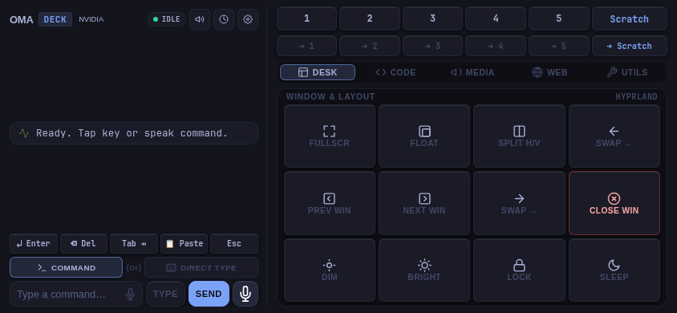
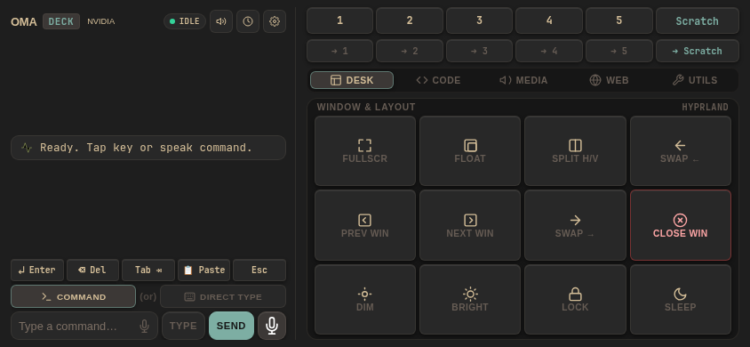
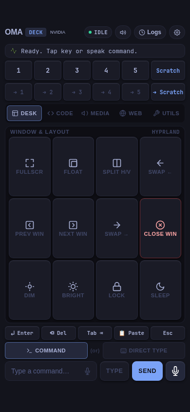
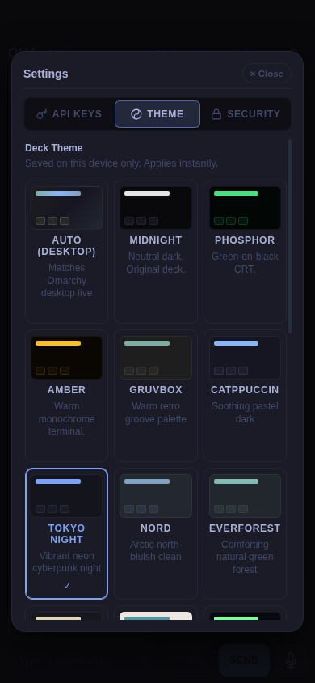

For Omarchy & Hyprland
Your phone is the keyboard now.
OmaDeck turns any phone or tablet into a Stream Deck and voice remote for your desktop. Run it from the couch, the bed, or across the room.
Free and open source · Apache 2.0 · No app store, no extra hardware
Tap it. Say it. Done.
A touch deck with real buttons for your desktop, plus voice control when tapping is too slow.
Switch workspaces
One tap to jump workspaces, move windows, or toggle the scratchpad.
Say what you want
"Open Chrome on workspace 5" just works. Bring your own AI: Ollama fully local, or Groq, OpenAI and more.
Type from your phone
Type or dictate into whatever window is focused, with Enter, Tab, Esc, All, Copy and Paste keys.
Kill :3000
Stop a stuck dev server with one tap, without hunting for the terminal.
Five profiles
Desk, Code, Media, Web and Utils decks, each with the buttons that fit the moment.
24 themes
Pick a theme you like, or let the deck follow your Omarchy theme automatically.
One evening on the couch
I leave coding agents working on one workspace and YouTube playing on another. This is how the evening goes, without getting up once.
- Desk
Check on the agents.
Tap workspace 2 to see where they are, then tap 3 to get back to the video.
- Media
Pause the video.
Play, pause, skip and volume are on the Media deck, along with brightness and the audio output.
- Code
A dev server hangs.
Tap
:3000on the Code deck. The deck tells you what it stopped. - Voice
Need a browser on workspace 5.
Hold the mic and say "open Chrome on workspace 5". It opens there and the screen follows.
- Type
Answer the agent.
Dictate the reply into the focused window, then send it with the Enter key on the deck.

Install in three commands
On your Omarchy machine. Your phone just needs a browser.
Get the code
git clone https://github.com/Mohsintl/omadeck.git cd omadeck
Install it
./install.sh
Pair your phone: scan the QR codes it shows, then add the page to your Home Screen
omadeck mobile
Tested on iPhone and iPad with Omarchy on Hyprland. Android should work too, and reports are welcome.
Built for your own network
OmaDeck types and runs actions on your desktop, so it stays close to home.
Local network only
The deck talks to your computer over your Wi-Fi. Away from home, use Tailscale or WireGuard, never port forwarding.
Paired, with an optional PIN
Each phone pairs with an auto-generated token. Add a 4–8 digit PIN on shared networks; wrong guesses are rate limited.
HTTPS with your own certificate
A local certificate, limited to private addresses, encrypts the connection. PINs and API keys are never sent over plain HTTP.
No shell by default
The assistant can't run shell commands unless you turn that on.
Careful with what it reads
After the assistant reads a page or the clipboard, commands wait for your spoken confirmation.
Honest about the limits
The security guide lists what OmaDeck does and doesn't protect against. Read it.
Everything in OmaDeck
Desk
- Workspaces 1–5 and the scratchpad
- Move windows between workspaces
- Fullscreen, float, split and swap
- Launch Files, Terminal, Web and more
Code
- Kill
:3000,:8000and other ports - Ctrl+C, Ctrl+Z and Ctrl+L
- Git status, diff and push
- Run the tests
Media
- Play, pause and skip
- Volume, mute and audio output
- Display brightness
Web
- New, close and switch tabs
- Back, forward, reload and zoom
- Jump to the address bar
Utils
- btop, Lazygit, Lazydocker, OpenCode
- Night light, keep awake, zen mode
- Clipboard history
Typing and voice
- Type or dictate into any window
- Enter, Del, Tab, Esc, All, Copy, Paste
- Voice commands with Ollama, Groq, OpenAI and more
- Hold, tap or both to talk
Look and setup
- Five profiles, portrait or landscape
- 24 themes, or follow your Omarchy theme
- Add to the Home Screen, no app store
omadeck log -fshows what happened
See the deck
Big, tactile keys that fit a phone in portrait or a tablet in landscape.



Like it?
If OmaDeck saves you a trip to the keyboard, a star on GitHub helps a lot. Ideas, bugs and pull requests are all welcome.
Star OmaDeck on GitHub